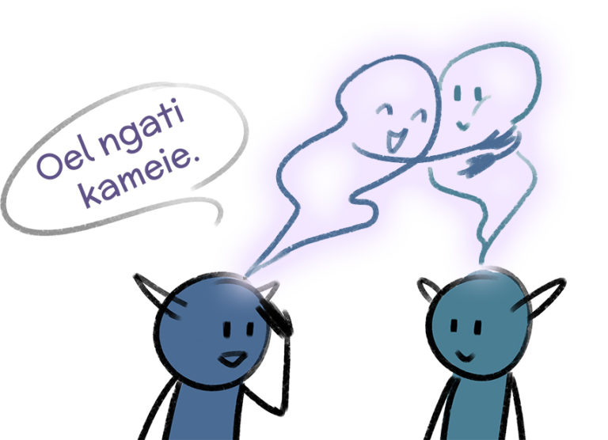

Chapter 2 - Oel Ngati Kame
Topics: Simple sentences, transitive verbs vs. intransitive verbs, lu vs. tok
(personal) Pronoun - Words which refer to people/things without naming them directly, examples: I, you, he, she, it, ...
to conjugate - Change the verb depending on the person, tense, …, examples: I eat, he eats, they ate
Article - the, a, an
Text
Peyralìl taron Yerikit. Pol ioangit nìn.
Peyral hunts a Yerik. She looks at the animal.
Yerik yom. Tsìk pamit Peyralìl stawm.
The Yerik eats. Suddenly Peyral hears a sound.
Lu Mokri! Yerikìl mokrit stawm nìteng.
There is a voice! The yerik hears the voice too.
Po tul. Peyral pey.
It runs. Peyral waits.
Taronyu za’u.
A hunter comes.
Taronyu:
Kaltxì ma ‘eylan! Oel ngati kame.
Hello friend! I see you.
Peyral:
Kame ngat. Skxawng! Set Yerik tul neto.
I see you. Moron! Now the Yerik runs away.
Taronyu:
Ngaytxoa. Ninatit oel fwew.
Sorry. I search for Ninat.
Peyral:
Ninatìl tsrayti tok.
Ninat is in the village.
Taronyu:
Irayo! Kìyevame.
Thanks! See you.
Peyral:
Kìyevame!
See you!
Grammar
Simple Sentences
Writing simple sentences with just one noun is as easy as it could be in Na’vi. Let’s take a look at some examples from the text:
Yerik yom.
The yerik eats.
Peyral pey.
Peyral waits.
Taronyu za'u.
A hunter comes.
If you search for those words in the dictionary, you’ll see that those sentences just use the plain verb, without any change. This also doesn’t change if you use other personal pronouns:
Nga yom. / Yom nga.
You eat.
Po yom. / Yom po.
He/She eats.
So while in English we have to conjugate the verb with the pronouns he/she/it, Na’vi doesn’t change the verb.
Let’s look again at those two sentences:
Yerik yom.
The yerik eats.
Taronyu za'u.
A hunter comes.
In the first sentence, »Yerik« is translated as »the Yerik«, while »Taronyu« becomes »a hunter« in English. Na’vi doesn’t have articles, so a distinction between »a Yerik« and »the Yerik« is not possible directly. Which article is used in the translation is based on context. In sentences without context, sentences often can be translated in multiple ways, to keep it more simple, example sentences here only are translated in one of the many possible ways.
l & t - Endings
We learned in the first chapter that the word order is mostly free, and we learned in the last paragraph that verbs are not conjugated. So how does the Na’vi language show who does something and who is affected by an action?
The text has a lot of examples of how that works:
Peyralìl taron Yerikit.
Peyral hunts a Yerik.
Pol ioangit nìn.
She looks at the animal.
Oel ngati kame.
I see you.
Tsìk pamit Peyralìl stawm.
Suddenly Peyral hears a sound.
The last sentence is especially interesting: Even though the word order is switched from an English point of view, in the translation it is still Peyral who hears something. So again, the word order doesn’t change the meaning:
Pamit Peyralìl stawm. = Peyralìl pamit stawm. = Stawm pamit Peyralìl. = …
The important thing here are the case endings which are attached to the nouns. »Peyral« becomes »Peyralìl«, and »pam« changes to »pamit«. Those two case endings, -l and -t, show who does the action and who is affected by it. Like the dative in the last chapter, those two case endings change depending on the noun’s last letter:
After consonant:
After vowel:
After diphthong:
-l (Who is the doer?)
-ìl
-l
-ìl
-t (Who is affected?)
-it/-ti
-t(i)
-it/-ti
Let’s again take a closer look at the effect of the case endings:
Pol yerikit taron.
He/She hunts the yerik.
Pot yerikìl taron.
The yerik hunts him/her.

Image by EanaUnil
The word order doesn’t change, only the case endings show who hunts whom!
Transitivity
Na’vi distinguishes two classes of verbs: transitive and intransitive verbs (marked in dictionaries as vtr. and vin.). What that means is easier to understand when shown with some examples.
An action from a transitive verb has a target. You hunt an animal - The animal is the action’s target. You can draw something, hear something, watch something, all those verbs are transitive. But you cannot wait something, you can just wait for something. The action of waiting does not have a direct target, same for for example running and coming. Those verbs are intransitive.
Important: -l & -t can only be used with transitive verbs! You will come across some verbs which seem to be clearly transitive in English, but are marked as vin. in the Na’vi dictionary. This is no mistake, but just a result of the fact that Na’vi and English are different languages and therefore not only use other words, but also different structures! In the following chapters you will learn how to deal with intransitive verbs. While learning vocabulary, it is always important to look up if a verb is intransitive or transitive and learn this information alongside the translation!
Also note that every transitive verb can be used intransitive, if the action does not have a target, then the -l ending is not needed:
Oel yerikit taron.
I hunt the yerik.
lu vs. tok
In English, »to be« is used for a lot of different stuff, for example to say that we are at a place. But the Na’vi use another verb for that context:
Ninatìl tsrayti tok.
Ninat is in the village.
For the local to be the Na’vi have a specific verb, »tok«, which, other than »lu«, is transitive and therefore needs -l & -t while lu is intransitive. A word like the English »in« in the example sentence is not needed here - it is already included in the meaning of tok. The difference between those two verbs becomes obvious if we compare them directly:
Ninatìl tsrayti tok.
Ninat is in the village.
Ninat tsray lu.
Ninat is a village.
Images by EanaUnil
Summary
simple sentences
Nga yom. / Yom nga.
You eat.
Po yom. / Yom po.
He/She eats.
l & t - case endings
Pol ioangit taron.
She/He hunts the yerik.
Pot ioangìl taron.
The animal hunts him/her.
But: Po taron.
She/He hunts.
Transitivity
Transitive verbs: vtr. in the dictionary, action has a target
Intransitive verbs: vin. in the dictionary, action doesn’t have a direct target
-> Sometimes different from English, so transitivity should be learned for every verb!
-> -l & -t only with transitive verbs!
tok vs. lu
Ninatìl tsrayti tok.
Ninat is in the village.
Ninat tsray lu.
Ninat is a village.
Exercises
1. Reading
Read out aloud the dialog. Concentrate on pronouncing every word precisely, it is ok to be slow! If possible, search for someone on Discord to read together with you.
2. Look up (for example with Reykunyu) which of the verbs you learned by now are transitive and which are intransitive. What does that mean for the usage of the verbs? The following verbs were used in this document by now:
fwew vtr
kame vtr
lu vin
nìn vtr
yom vtr
za'u vin
pey vin
stawm vtr
tok vtr
tul vin
tse'a vtr
taron vtr
3. Fill in the gaps in the following sentences with -l, -t and -ru (Not every gap needs to be filled!):
- a) Ngal ioangit taron//. You hunt the animal. Alternative solution: Ngat ioangìl taron. - The animal hunts you.
- b) Poru lu// fpom//. He/She is fine.
- c) Peyral// pey//. Peyral waits.
- d) Ngal tsrayti tok//. You are in the village.
- e) Pukit ngal fwew//. You search for the book.
- f) Po// skxawng// lu//. He/She is a moron.
- g) mokrit stawm// oel. I hear a voice.
- h) Tse'a// pukit oel. I see the book.
4. Translate the following sentences:
- a) The hunter hunts the animal. Ioangti taronyul taron.
- b) The hunter hunts. Taron taronyu.
- c) The animal hears the hunter. Ioangìl taronyut stawm.
- d) The yerik is in the village. Tok tsrayti yerikìl.
- e) Thanks Peyral, until next time! Irayo ma Peyral, hayalovay!
- f) Ninat looks at the ikran. Ninatìl nìn ikranti
- g) She runs. Po tul.
Vocab
fwew (vtr.) [fwɛw] - to look for, to seek, to search for | Oel Ninatit fwew. - I search for Ninat. | Ngati oel fwew. - I seek you.
irayo (intj./n.) [i.ˈɾa.jo] - thank, thanks | Irayo ma Peyral. - Thanks, Peyral.
kame (vtr.) [ˈka.mɛ] - to see, to see into (spiritual sense) | Oel ngati kame. - I see you.
mokri (n.) [ˈmok.ɾi] - voice | Lu mokri! - There is a voice! | Peyralìl mokrit stawm. - Peyral hears a voice.
neto (adv.) [nɛ.ˈto] - away | Yerik tul neto. - The yerik runs away.
nìn (vtr.) [nɪn] - to look at | Ngal ikranit nìn. - You look at an ikran.
nìteng (adv.) [nɪ.ˈtɛŋ] - too, also, likewise | Oel taronyut stawm niteng. - I hear the hunter too. | Tsrayti pol tok nìteng. - He/She is in the village too.
pam (n.) [pam] - sound, noise | Yerikìl pamit stawm. - The yerik hears a sound.
pey (vin.) [pɛj] - to wait | Peyral pey. - Peyral waits.
skxawng (n.) [skʼawŋ] - moron, idiot | Nga lu skxawng. - You are a moron.
stawm (vtr.) [stawm] - to hear | Yerikìl pamit stawm. - The yerik hears a sound. | Peyralìl mokrit stawm. - Peyral hears a voice.
taron (vtr.) [ˈta.ɾon] - to hunt | Oe taron. - I hunt | Yerikit taron Ninatìl. - Ninat hunts a yerik.
tok (vtr.) [tok] - to be at, occupy a space | Ninatìl tsrayti tok. - Ninat is in the village.
tse'a (vtr.) [͡tsɛ.ˈʔa] - to see | Oel yerikit tse’a. - I see the yerik.
tsìk (adv.) [͡tsɪk] - suddenly, without warning | Tsìk yerik tul neto. - Suddenly the yerik runs away.
tsray (n.) [͡tsɾaj] - village | Ninatìl tsrayti tok. - Ninat is in the village.
tul (vin.) [tul] - to run | Tsìk yerik tul neto. - Suddenly the yerik runs away.
yerik (n.) [ˈjɛ.ɾik] - yerik, hexapede, deer-like Pandoran animal | Tsìk yerik tul neto. - Suddenly the yerik runs away.
yom (vtr.) [jom] - to eat | Yerik yom. - The yerik eats. | Ikranìl yerikit yom. - The ikran eats the yerik.
za'u (vin.) [ˈza.ʔu] - to come | Taronyu kommt. - The hunter comes.
Phrases
- Oel ngati kame. / Kame ngat. /Oel ngati kameie. - I see you. “I see inside you.” Greeting. literally: I see you spiritually.

Image by EanaUnil